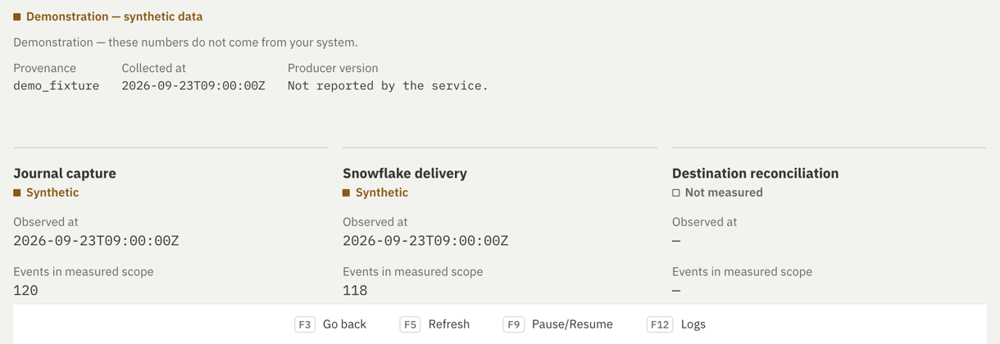

A running reader doesn’t mean your data arrived.
Open-source change data capture from IBM i (AS/400) to Snowflake, in your own AWS or GCP account, with no Kafka and no license key. We report journal reading, Snowflake delivery and event-count reconciliation separately for each table; “Not measured” means we have no evidence.
Preview, DEV/INT only No production qualification, no SLA. Source 0.4.2, last observed release 0.3.5 (). Evidence
In our earlier 0.3.4 cold-warehouse trial, 3 of 4 targets missed our 10 s bar (worst write 13.641 s, SQL start to visible in the mirror). A later 0.3.4 run passed on all four. Neither is a P95 or an SLA.

From journal receiver to Snowflake, one stage at a time
Quadringent applies change data capture to the journals of Db2 for i tables on IBM i (formerly AS/400 and iSeries). A Java/JTOpen reader reads journal entries over TLS from the last acquired position. It is for data teams and IBM i operators who need a Snowflake mirror of journaled tables.
- RCV0001 detached
- RCV0002 detached
- RCV0003 attached, still receiving
- Raw storage S3 or GCS. Each batch is kept unchanged, with a receipt, before loading.
- Snowflake History and mirror tables. Readback compares the source, history and mirror.
- Journal capture
- Synthetic120 events
- Snowflake delivery
- Synthetic118 events
- Destination reconciliation
- Not measured—
- Capture enabled
- Configured, which does not prove delivery.
- Measured
- A recorded, timestamped value, distinct from an estimated one.
- Absent
- The value is missing and the screen says so.
- Capture enabledPausedAttentionStopped
- The five table states.
Each connection and table is shown with its state in words, lag, throughput, source and Snowflake row counts and last arrival; one banner points at what needs verification. A missing value shows “—”, never a zero or a silent estimate, and an unmeasured stage stays “Not measured”. The Logs tab lists timestamped table events, and the Evidence tab keeps its measured scope and timestamps.
Pause and resume are controlled from the cockpit. Removing a table, restarting an initial copy, replaying a journal range or suspending the whole organization needs human approval; an agent connected through MCP cannot approve its own action without explicit administrator preauthorization, and every call is audited. Retention of RAW data and checkpoints after complete site loss was verified on historical versions only (see Evidence).
Try it
A real site needs an IBM i journal and TLS access, a scoped Snowflake role, raw storage and limited cloud permissions. Check compatibility and prerequisites first. The cockpit is unauthenticated on loopback by default, so read the security policy before exposing it.
The cockpit with generated data
git clone https://github.com/quadringent/quadringent-ce.git
cd quadringent-ce
npm ci --prefix ui
node ui/scripts/build-demo.mjs --serveNeeds Node 24 or 26. Open http://127.0.0.1:8870/#/cockpit. This is a Synthetic demo: no IBM i, Snowflake or cloud connection, and the page blocks network requests. A banner shows the source version and commit. It is not a release qualification. Demo guide
AWS or GCP, on a VM or a cluster
# Complete plan, without executing it
quadringent install --cloud gcp --target cluster \
--region europe-west1 --project my-project \
--name my-site --release-manifest release-manifest.json \
--assets-dir ./quadringent-0.4.2 --dry-runThe CLI comes from the wheel, the chart and Terraform modules from the extracted sdist (--assets-dir), and the three images from the manifest, pinned by digest. Review the plan, then remove --dry-run. Alternatives: --cloud aws, --target vm. Verify the release, its checksums and its scope before installing. Installation guide · Expert Helm guide
quadringent doctor --check-ibmi ibmi.example.test --tlsQuadringent doctor: BLOCKED (10 failed, 1 unknown, 1 skipped, 0 passed)
Generated 2026-10-13T12:51:28Z UTC; 10 check(s) failed; fix them before relying on this installation.
[FAIL] local_tools.helm [tool helm]: helm is not found on PATH.
Next: Install helm and make sure it is on PATH, then run the doctor again.
[... 2 more [FAIL] lines omitted: kubectl and terraform, same message ...]
[FAIL] network.tcp.command [host command 9475/tcp]: TCP connection to port 9475 failed: host name not resolved.
Next: Check the IBM i host name and the DNS used by this machine and by the reader.
[... 6 more [FAIL] lines omitted: the other 3 TCP ports and the 3 TLS handshakes ...]
[UNKN] authentication.ibmi_signon [host ibmi.example.test]: IBM i sign-on was not tested; configured credentials are not proof of authentication.
Next: Run Test in the activation wizard, or read the control plane diagnostic with --control-plane.
Limits: The doctor never sends IBM i credentials. (observed 2026-10-13T12:51:28Z, doctor:not-tested)
[SKIP] control_plane.api [control_plane v2]: The control plane was not read; capture, delivery and evidence are not observed.
exit 1Real output of the command above, cut where marked, against a placeholder host that does not resolve, on a machine without helm, kubectl or terraform. Most checks fail by design. The doctor says BLOCKED rather than showing a green light it cannot back up.
What we have measured, and what we have not
-
Measured
0.3.5, . A fresh initial copy on four targets (AWS VM, EKS, GCP VM, GKE), 110 mirror rows and 110 history C images each, and an EKS rollback and re-upgrade that kept the same PostgreSQL PVC. Receipt: runtime-0.3.5.json.
-
Measured
0.3.4, . Reconstruction on new PostgreSQL PVCs, 4 reader SIGKILL recoveries and 8 cold/warm observations within 10 s, from 3.763 s to 8.876 s between the SQL statement and the row appearing in the mirror. These are upper bounds, not a P95 and not an SLA. Receipt: recovery-0.3.4.json.
-
Measured, above the bar
The earlier 0.3.4 cold-warehouse trial passed our 10 s bar on 1 of 4 targets. It stays in the record next to the later run. Summary: qualification-0.3.4.json.
-
Not tested
On the current source, 0.4.2: native CDC, reader outage, latency and complete cloud-loss recovery need fresh qualification, and a historical result does not stand in for them.
-
Not measured
Snowflake cost per 24 h, and the CPU and I/O cost of the reads on your IBM i.
Read the full evidence page for results by version, target and date, the 0.2.x history and every open limit.
Documentation
Before you grant access
- What Quadringent does on your IBM iWhat it installs and runs, which authorities each part needs, and what it never does.
- Where your data goes and how to leaveThe path from journal to Snowflake, what leaves your accounts, and how to stop.
- Verify a releaseCheck signatures, SBOMs and pinned digests against the public code.
- Governance and continuityHow the project is run and what remains if the maintainers stop.
- SupportWhat support exists and what is not offered.
- Reporting a vulnerabilityHow to report one, and the response target.
Before the first call
- Questions for a first callReleases, tables, initial load, latency, recovery, costs and production. Each answer says Tested, Required, Not tested or Not supported.
- How Quadringent comparesOther ways to move IBM i data to Snowflake, each claim about another product tied to that vendor’s documentation.
- Options to replicate AS/400 (IBM i) data to SnowflakeThe approaches available, what each one needs and where each one stops.
- How IBM i journals work for change data captureWhat a journal records, how receivers rotate and what that means for a reader.
- Capture is not deliveryWhy a running reader does not prove that data reached Snowflake, and how to check.
Working with us
Community is free: engine, API, cockpit and chart under Apache-2.0, with no activation key or commercial table limit. IBM i, cloud and Snowflake costs stay yours. We have not launched or priced any paid offer.
If there is demand, the first thing we would offer is installation and a pilot on your infrastructure, with table scope, acceptance criteria and evidence deliverables agreed before we start. Support would be a separate agreement after the pilot, and we would consider managed hosting only once a real need is confirmed.
Email quadringent@proton.me to discuss a pilot privately, without a GitHub account. A public pilot interest request on GitHub is also possible; the issue and your account name are publicly visible. Send no credentials, access, private hostnames, customer data or attachments.
What happens next: a technical discovery exchange, then a written scope, then a separate pilot decision. We never accept a request automatically, and we make no response-time commitment.